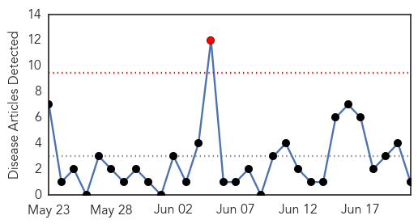
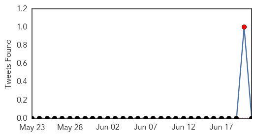
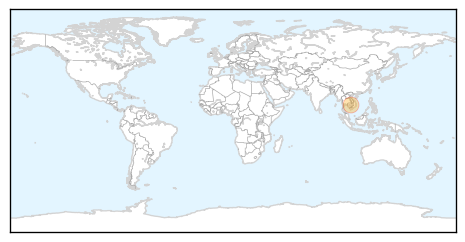
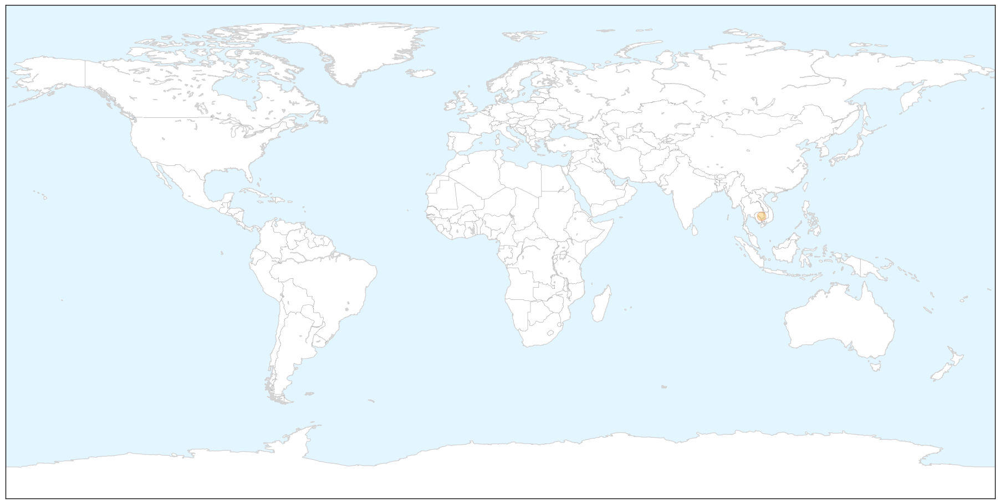
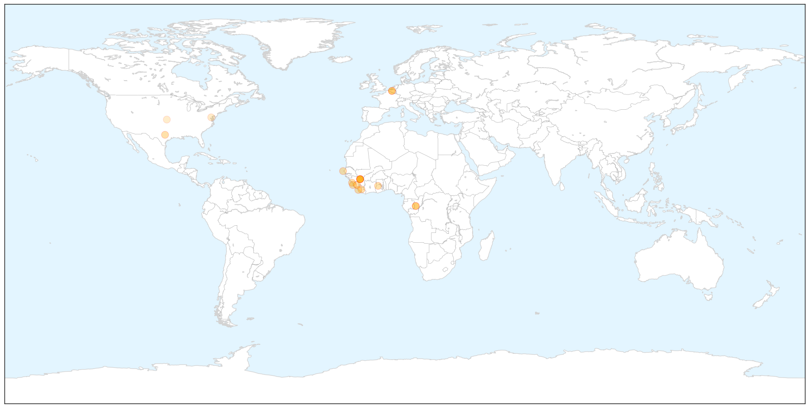

Dengue Fever
30-Day Web Trend
1 alerts, 0 warnings

30-Day Twitter Trend
1 alerts, 0 warnings

Article Locations

X

Article Confidences

Top Articles:
Top Tweets:
-
No tweets found for Jun 21, 2014
Ebola
30-Day Web Trend
11 alerts, 4 warnings

30-Day Twitter Trend
0 alerts, 0 warnings

Article Locations

X

Article Confidences

Top Articles:
- 1.000
- Prayers, precautions in W Africa amid Ebola threat
- 1.000
- Doctors Without Borders: Ebola 'out of control'
- 1.000
- Liberian official: 7 more deaths linked to Ebola
- 1.000
- Doctors Without Borders: Ebola 'out of control'
- 1.000
- The Voice of Russia: News, Breaking news, Politics, Economics, Business, Russia, International current events, Expert opinion, podcasts, Video
- 1.000
- Sudan Vision Daily
- 1.000
- Ebola spread due to 'relaxation' of efforts
- 0.999
- An "Out Of Control" Epidemic Is Ravaging Western Africa
- 0.999
- Ebola in the United States
- 0.998
- Ebola Outbreak In West Africa Is 'Totally Out Of Control,' With Volunteers And Supplies Running Low
- 0.998
- KSWO, Lawton, OK- Wichita Falls, TX: News, Weather, Sports. ABC, 24/7, Telemundo -
- 0.998
- Ebola ‘out of control’ in West Africa
- 0.996
- Ebola Out Of Control In West Africa
- 0.996
- Doctors Without Borders
- 0.996
- Doctors Without Borders: The Ebola Outbreak In West Africa Is 'Totally Out Of Control'
- 0.993
- West Africa devastated by Ebola virus
- 0.742
- US now says 84 lab workers were potentially exposed to anthrax
- 0.648
- CDC says more lab workers may have been exposed to anthrax
- 0.594
- CDC Workers Exposed To Anthrax
- 0.554
- Information Minister denounces the ‘SEA’ « Awoko Newspaper
Top Tweets:
-
No tweets found for Jun 21, 2014